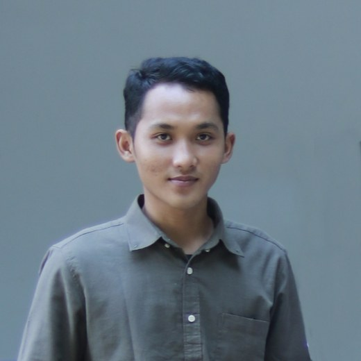

There was nobody to check my work. So I became that person.
Asna Azhari · Hardware engineer · Yogyakarta, Indonesia

I joined a medical device company in January 2024 as its first hardware engineer. The company was newly formed and had no products yet. There was no design to copy, no senior engineer to ask, and no process to follow. I built the function while teaching myself what the function was.
Three of the products I have worked on arrived from outside vendors who had left them unreliable, unfinished, or too thin on features. One was started from a blank page. Five have been released to production, and three are in mass production: the operating table controller, its power supply board, and the nurse call set.
How I work
The habit I care most about is checking how a number was produced before accepting what it says. Three questions, in order:
- Did the method suit the question that was actually asked?
- Was the reading taken correctly?
- Was the processing right?
That applies to my own results before anyone else's, and to data other people hand me. It is not suspicion. A measurement can be taken honestly and still be wrong one step behind, and the point of asking is to find which step.
Each of the three has caught something real. An EMC fix measured 23.4 dB better but in the condition that had already passed, not the one that had failed, so it was rejected and the product went on to pass retest with 9.35 dB of margin. I withdrew a finding of my own after realising I had read an oscilloscope cursor across two periods rather than one. An irradiance report divided a 60 nm band by 30, which had doubled every figure in it; correcting it dropped the passing points from 15 of 18 to three. And a modem datasheet figure circulating online said 2.8 A where the manufacturer's own hardware manual says 2 A, which is what the power rail was designed around.
The corrected numbers made my own work look worse in three of those four cases. That is the only reason the other numbers on this site are worth anything.
Why the habit exists
Because there was nobody else. With no senior engineer to review a schematic and no process to catch a mistake before it reached a factory, the checking had to come from somewhere, and the only place left was me. I would rather have learned it with someone looking over my shoulder, but this is how it happened.
It also shaped what I build. When the tool I needed did not exist, I made it: an evaluation board so firmware did not have to wait for product hardware, a USB to TTL adapter, a Modbus adapter, a hub. None of them ship to a customer. They exist so the real work can move.
Before this
I studied Electrical Engineering at Universitas Negeri Yogyakarta, concentrating on control systems. My thesis predicted state of charge in a 108 V 259 Ah battery pack using an LSTM network, which is where I first had to decide whether a model that fitted the data was actually telling me something true.
What I want next
A bench with people more experienced than me on it. I have spent nearly three years deciding alone whether something was good enough, and I have got better at it than I expected to. What I have not had is anyone to argue with me. That is the part I am missing, and it is the main thing I am looking for.
- Role
- Hardware engineerFirst one at the company
- Since
- January 2024
- Based in
- Yogyakarta, Indonesia
- Products
- 5Three in mass production
- Boards
- 14Plus four in-house tools
- Scope
- Schematic to releaseIncluding the firmware that tests it
- Standards
- IEC 60601 familyISO 14971, CISPR 11
- Open to
- Hardware, embedded, compliance
If you are hiring for hardware, embedded or compliance work, I would like to hear what you think I have got wrong. The CV below is the same one I send out.